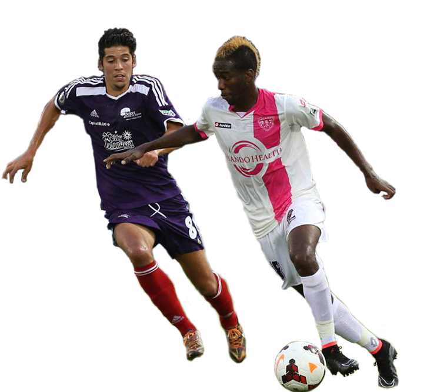
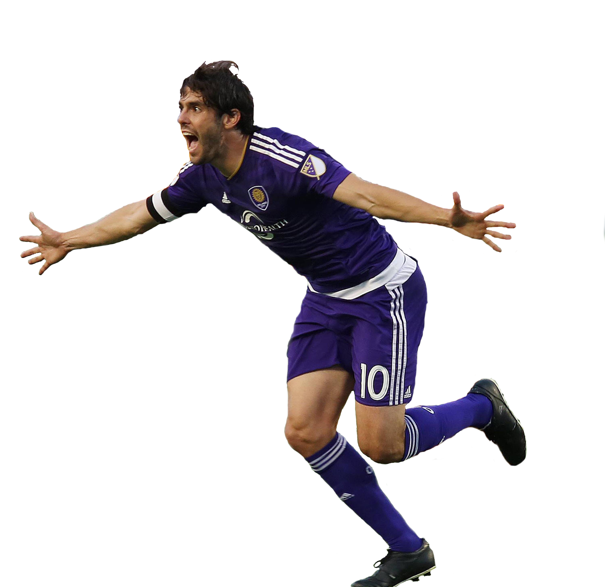

The History of
USL
United Soccer League
(Midfielder Kevin Molino)
2012 & 2013
The 2012 Orlando City Soccer Club season is the club's second season of existence. They ended the season with winning the league title for the second consecutive year, but they lost in the Playoffs to the Wilmington Hammerheads in the Semi-final 3–4. in 2013 Orlando finished second in the overall regular-season table. They were declared 2013 USL Pro Champions after beating Charlotte Eagles 7–4 in front of 20,886 fans

(OCSC Supporters group The Iron Lion Firm)
MLS
Major League Soccer
(Captain Kaka)
2016
2016 was not a very notible year for the club, ending with the most goals conceded in the league. Adrian Heath (Orlando's coach since 2011) was sacked by Orlando City on July 7, 2016, following a 4–0 defeat against FC Dallas. Hiring of former NYCFC manager Jason Kreis on July 19.
(The New Orlando City Stadium)
Orlando City Soccer

2011
The 2011 Orlando City SC season, marked the club's first season in existence, and their first year in the third-tier USL Pro League. Previously, the club was known as the Austin Aztex FC before they were relocated to Orlando, Florida. They won a double, winning the Commissioner's Cup as the top team in the league's regular season, and winning the USL Pro Championship.
(Midfielder Jamie Watson & Foward Dom Dwyer)
2014
The fourth year in the USL Pro was their last in the league. In the preseason they competed in the 2014 Walt Disney World Pro Soccer Classic taking 2nd in their group with 3 draws and drawing in the 3rd place match against the New York Red Bulls. By finishing the season 19–5–4, Orlando City won their 3rd Commissioner's Cup.

2015
Orlando City's first season in Major League Soccer. The clubs first major signing was Bolon de Or winner, Kaka. opened the 2015 MLS season at the Citrus Bowl against the other expansion team for that season, New York City FC. The match ended in a 1–1 draw after Kaká scored an equalizer in the first minute of second half stoppage time.

(OCSC Supporters March)
2017
2017 is the third season in the MLS and the first season in the brand new Orlando City Stadium. On January 4, 2017, 49 rainbow-colored seats in Section 12 of the new stadium to permanently honor the victims and families of those affected by the Pulse tragedy on June 12, 2016. The team opened the season with a 1-0 win over New York City FC and is currently in its best start of the season.